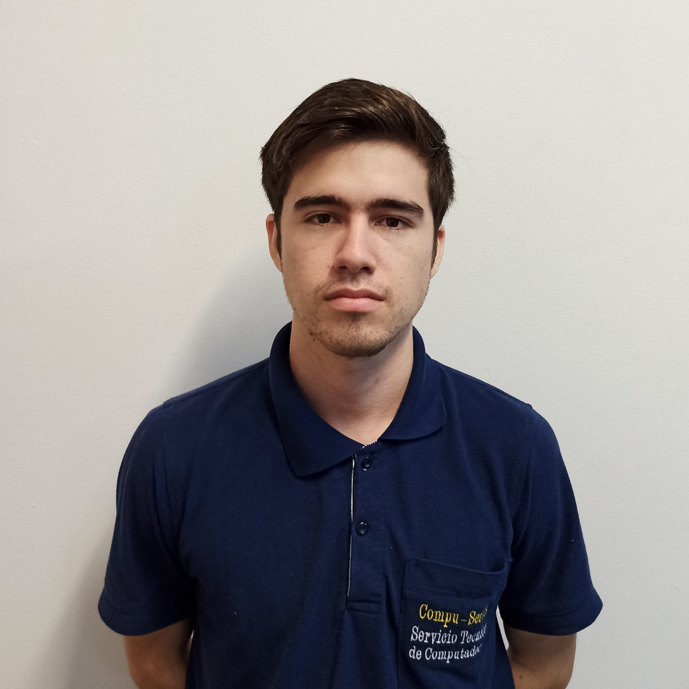

Nombre:
Ariel Fernando Nitai Galeano Lehner
Dirección:
Ignacio A. Pane - Luque
Teléfono
0982998980
Datos Generales
Fecha de nacimiento:
22-06-1998
Email:
arifer2011@live.com
Formación Académica
Educación Secundaria:
Colegio Nacional de Luque Gral. Jose E. Aquino
Educación Universitaria:
Universidad Nacional de Asunción - Facultad Politécnica (2018 hasta la fecha), actualmente estoy cursando el 7mo semestre de la carrera.
Experiencia Laboral
Cargo:
Compu service - Soporte Tecnico y mesa de ayuda (2018-2020)
Actividades en el cargo:
Mantenimiento de computadores , instalaciones de software , control de servidores.
Cargo:
Avanza S.A - Representante de atencion al cliente (2021)
Actividades en el cargo:
Agendamiento de instalaciones , soporte de instalaciones
Otras Actividades
Hobbies y pasatiempos:
Futbol con los amigos, video juegos , ver series y actualmente realizando capacitaciones para lo que es desarrollo web